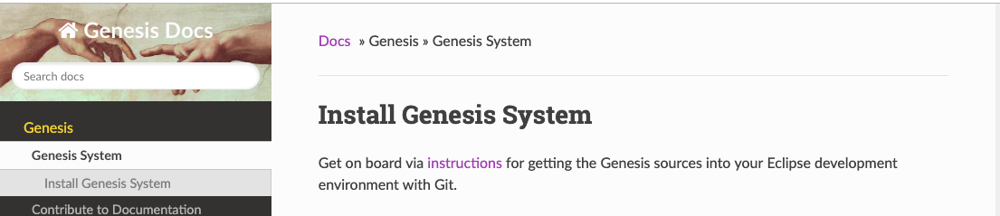
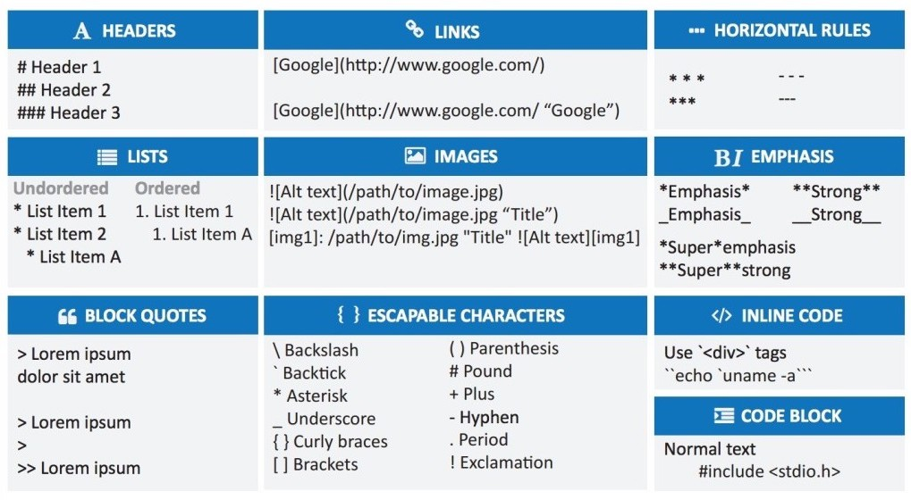

Contribute to Documentation
Step 1: Clone Project
Please send me your GitHub email address so that I can add you to the Genesis Docs project as a collaborator.
After I have replied you, open terminal and go to your work directory (e.g., ~/Documents). Then clone the project and go to the project folder:
$ git clone git@github.com:ztyang-mit/genesis-doc.git
Here is the layout of the project:
mkdocs.yml # The configuration file, e.g., for organizing the pages
docs/
index.md # The documentation homepage
... # Other markdown pages
imgs/
... # Images
css/
extra.css # style file to customize based on site/theme.css and site/theme_extra.css
site/ # You can ignore thing here, MkDocs generNates them when you deploy the page
Step 2: Install MkDocs
MkDocs is a fast, simple and downright gorgeous static site generator that's geared towards building project documentation. Documentation source files are written in Markdown, and configured with a single YAML configuration file.
You can install MkDocs using pip or other package manager.
Install with pip
If you use the Python package manager, pip, then you can:
$ pip install --upgrade pip
$ pip install mkdocs
To check that it is installed:
$ mkdocs --version
mkdocs, version 1.0.4
Install with a Package Manager
If you prefer useing another package manager (such as apt-get, dnf, homebrew, yum, chocolatey, etc.) to install packages on your system, then you may install MkDocs with your package manager.
Step 3: Start MkDocs Server
MkDocs comes with a built-in dev-server that lets you preview your documentation as you work on it. Make sure you're in the same directory as the mkdocs.yml configuration file, and then start the server by running the mkdocs serve command:
$ mkdocs serve
INFO - Building documentation...
INFO - Cleaning site directory
[I 160402 15:50:43 server:271] Serving on http://127.0.0.1:8000
[I 160402 15:50:43 handlers:58] Start watching changes ...
The command will open up http://127.0.0.1:8000/ in your browser, and you'll see the home page being displayed:

Step 4: Edit Pages
Before you make changes to the project, make sure to git pull the latest changes made by other to avoid conflict.
When you save changes to the project, http://127.0.0.1:8000/ will automatically update.
Add a page
If you want to add a page to the wiki, reate a new markdown file in the docs/ directory.
Then, add its name and markdown file name to mkdocs.yml, where you will see:
nav:
- Genesis:
- Genesis System: index.md
- Contribute to Documentation: mkdocs.md
- Representation:
- Inner Language - Innerese: innerese.md
- ...
- Fundamentals:
- Inference by Rules: inference.md
- ...
-
The current hierarchy and order is designed so that a new student can use the documentation as a tutorial. Please feel free to make changes. Major reorganization is possible upon discussion among the collaborators:
Zhutian Yang: ztyang@mit.edu
Michael Fleder: mfleder@mit.edu
Write a page
Our wiki pages are written in Markdown, a lightweight markup language with plain text formatting syntax. The following cheatsheet designed by Theme Spectre showed the most frequently used syntax:

To make it even easier to write in Markdown, you can add Markdown plugin to your editor. For example, I use markdown-editor in Atom to enjoy the following features:
- Toggle text styles using shortcut such as
Ctrl+B - Continue lists and table rows when press
enter - Correct ordered list numbers
Step 5: Deploy After Editting
Before you deploy for the first time
When you deploy, the html pages will be generated into the site/ directory. One thing annoying is that such a footer will also be automatically generated onto every page:
The solution is to change the MkDocs python package footer file. To find out the location of the package, check the version of MkDocs in commandline:
$ mkdocs --version
mkdocs, version 1.0.4 from /miniconda3/lib/python3.7/site-packages/mkdocs (Python 3.7)
In mkdocs/themes/readthedocs/footer.html, change the following lines:
Built with <a href="http://www.mkdocs.org">MkDocs</a> using a <a href="https://github.com/snide/sphinx_rtd_theme">theme</a> provided by <a href="https://readthedocs.org">Read the Docs</a>.
into our own footer:
Maintained by the Gensis Group, Computer Science and Artificial Intelligence Lab, MIT. <br>
Any questions? Contact Yang at <a href="mailto:ztyang@mit.edu">ztyang@mit.edu</a>
or Dylan at <a href="mailto:dxh@mit.edu">dxh@mit.edu</a>
Routine deploy with one command
Currently, the wiki page is hosted on GitHub. We will later shift over to private domains.
After you have made the changes, simply do this in the same directory as the mkdocs.yml file:
mkdocs gh-deploy --clean
The page will be updated on https://ztyang-mit.github.io/genesis-doc/. A short url that directs to the page is bit.ly/genesis-docs.
Note that you don't have to git push. The deploy command does it for you.
Style Guide
To make the pages easier to read, Yang tries to follow a few style rules:
- Write short paragraphs
- Include examples for each topic
- Include screenshots for each example
- Include a summary for each page
- Use
inline codestyle for objects in java code, such as- class names, e.g., the
Translatorclass - function names, e.g.,
Mark.say() - frame names, e.g.,
Johnandwith - input sentence, e.g.,
John killed Mary
- class names, e.g., the
Summary
In this article, you have learned how to install the MkDocs package, write documentation pages, and deloy the site.
- Every time you work on the project, you need to use two commands at the project directory.
$ mkdocs serve # before editting, start the MkDocs server
$ mkdocs gh-deploy --clean # after editting, deploy the site
- During editting, you add and organize pages at the configuration page,
mkdocs.yml. - You write pages using Markdown, which makes it easy to style text, add links, codes, and images.
- You may follow or revise the Style Guide to make the documentation easier to read.